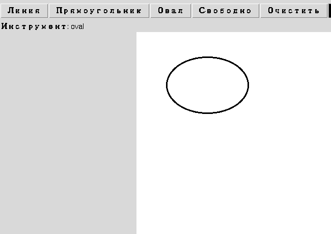

Глава 18 · Инструменты рисования
Геометрия овала
create_oval принимает те же четыре координаты, что и прямоугольник — овал вписан в невидимые границы.
Овал — это прямоугольник с закруглёнными углами до предела
canvas.create_oval(x1, y1, x2, y2) принимает ровно те же четыре
числа, что и create_rectangle() — но рисует не прямоугольник, а
эллипс, вписанный в него. Прямоугольник при этом не рисуется — он просто
определяет границы, внутри которых строится овал.

Не «центр + радиус», а именно ограничивающий прямоугольник
У Canvas нет отдельного
create_circle(): круг — это просто овал, у которого ограничивающий прямоугольник — квадрат (x2 - x1 == y2 - y1). Если приложению всё-таки нужны «центр + радиус» (например, для игровой логики), их несложно пересчитать в границы: x1, y1 = cx - r, cy - r и x2, y2 = cx + r, cy + r.Практика: ограничивающий прямоугольник овала
Автоматическая проверка — переводим координаты между «центр+радиус» и границами create_oval